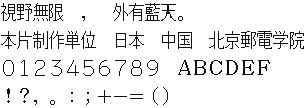

字样资料 / Panasonic TU-TX100
Panasonic TU-TX100 · 16×24
3488个可映射字符，含2966汉字；固定样句缺廣、窗 · 16×24 · 繁体
放大观察 · 3×

原尺寸 · 1×
中文缺字：廣、窗。对应位置留空，不借用其他字体补齐。
来源与字样信息
- 家族
- Panasonic TU-TX100
- 字符框
- 16×24 px
- 字符范围
- 繁体
- 样本文字
- 視野無限廣，窗外有藍天。 本片制作単位 日本 中国 北京郵電学院
- 全角英数样文（非ASCII）
- ０１２３４５６７８９ ＡＢＣＤＥＦ ！？，。：；＋−＝（）
- 覆盖说明
- 3488个可映射字符，含2966汉字；固定样句缺廣、窗
- 缺字
- 中文缺字：廣、窗。对应位置留空，不借用其他字体补齐。
- 样张类型
- 日文字形、繁体固定样句及全角英数；缺字留空。
- 风格
- 未分类
- 用途
- 历史屏幕字库
- 字形来源
- 直接读取Teletext Rescue的jtFull位图表；作者标称源自Panasonic TU-TX100。未独立核验原机ROM。
- 授权状态
- 许可待核实
- 许可说明
- 上游程序GPL许可不等于字模授权。仅公开固定字样及不含字模的本地导出脚本。
- 说明
- 日本文字放送字样，JIS汉字2966字；不是完整繁体中文字库。16×24存储框，主要墨迹约15×18，不缩放或裁成新字号。与FS-UV1共同2966汉字均不同；另外34份已有字库未发现整套重复。
- 获取方式
- 来源
- Teletext Rescue 字模表与来源声明
- 原生证据
说明：源表逐行16×24存储位图，无矢量取模。JIS→Unicode采用上游映射表；源SHA256 6abba27355bbb968efd92af9bc4563d984c175801e0f84e139d963aae6093f82。
查看原生设计来源
字体使用与再分发按原来源许可执行。